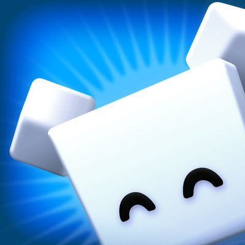

404
Diese Seite gibt es nicht – vielleicht ist sie in eine andere Zone des Turms gesprungen.
Zurück zur Startseite
Diese Seite gibt es nicht – vielleicht ist sie in eine andere Zone des Turms gesprungen.
Zurück zur Startseite